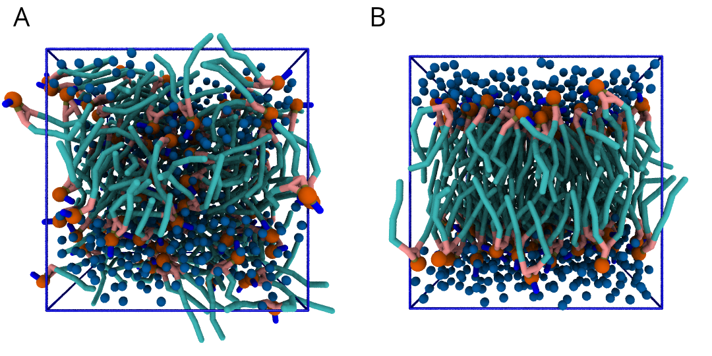

Lipid bilayers - Part I: Self-assembly
In case of issues, please contact Luís Borges-Araújo or Manuel N. Melo.
Summary
Introduction
The Martini coarse-grained (CG) model was originally developed for lipids[1,2]. The underlying philosophy of Martini is to build an extendable CG model based on simple modular building blocks and to use only few parameters and standard interaction potentials to maximize applicability and transferability. Martini 3 greatly expanded the number of possible interactions, but retains this building-block approach[3]. Due to the modularity of Martini, a large set of different lipid types has been parameterized. Initial Martini 3 lipid parameters were made available with the Martini 3 release, and then updated and greatly expanded in 2025[4] (available as one of the Martini Force Field Initiative GitHub repos). In this tutorial, you will learn how to set up lipid-water system simulations with lipids from this collection, with a focus on bilayers. You will also study a number of standard bilayer properties.
These tutorials assume a basic understanding of the Linux operating system and the GROMACS molecular dynamics (MD) simulation package. An excellent GROMACS tutorial is available at: http://www.mdtutorials.com/gmx/.
The aim of the tutorial is to create and study properties of CG Martini models of lipid bilayer membranes. First, we will attempt to spontaneously self-assemble a DSPC bilayer and check various properties that characterize lipid bilayers, such as the area per lipid, bilayer thickness, order parameters, and diffusion. Then, we will change the nature of the lipid head groups and tails, and study how that influences bilayer properties.
You can download all the files, including worked examples of this tutorial (GROMACS version 2021): bilayer-lipidome-tutorial-I_worked.tgz, this is a rather large archive. A smaller set that expects you to do more yourself is recommended and is named: bilayer-lipidome-tutorial-I_minimal.tgz Unpack one of the archives and enter the respective directory (NOTE: both archives expand to a directory called bilayer-lipidome-tutorial-I, with a subdirectory worked or minimal depending on the case):
tar -xzvf bilayer-lipidome-tutorial-I_minimal.tgz
cd bilayer-lipidome-tutorial-I/minimal/Bilayer self-assembly
We will begin with self-assembling a distearoyl-phosphatidylcholine (DSPC) bilayer from a random configuration of lipids and water in the simulation box. Enter the spontaneous-assembly/ subdirectory. The first step is to create a simulation box containing a random configuration of 128 DSPC lipids. This can be done by starting from a file containing a single DSPC molecule, which you can get from the Martini 2 lipidome.
Note In the Martini 2 lipidome, the DPPC model structure, with 4 beads per tail, can represent both atomistic C16:0 dipalmitoyl-phosphatidylcholine (DPPC) and C18:0 distearoyl-phosphatidylcholine (DSPC) lipids. In the 2025 lipid parameter update[4] that we will be using, the number of beads in DPPC and DSPC is still the same, but bonded parameters now distinguish the behavior between the two lipids (previously, both the same structure and the same topology model would represent C-16 (palmitoyl) and C-18 (stearoyl) tails, which would therefore be indistinguishable). For our purposes, it will be fine to use the DPPC structure from the Martini 2 lipidome as a starting point. Also note that you can download coordinate files for many Martini lipids from the website. For the time being these structures are mostly for Martini 2 lipids, but structurally the difference doesn’t matter in the cases, like DPPC/DSPC, where the Martini 3 lipid has the same overall mapping and number of beads. Finally, for cases when you have a lipid topology but not its structure, see the Lipid Bilayers II tutorial on using the insane script, or look into the
molmaker.pyscript for generating structures directly from topologies.
From the Martini 2 lipidome download the structure from under the entry for DPPC (DPPC-em.gro, but do not download any .itp file from there, as those are specific for Martini 2). Save it as DSPC-em.gro.
wget https://cgmartini-library.s3.ca-central-1.amazonaws.com/1_Downloads/ff_parameters/martini2/lipidome/pc/dppc/DPPC-em.gro -O DSPC-em.groThe GROMACS tool insert-molecules can take the DSPC-em.gro this single-molecule conformation and attempt to place it in a simulation box multiple times at a random position and random orientation, each time checking that there are no overlaps between the consecutively placed molecules. For help on any GROMACS tool, you can add the -h flag.
gmx insert-molecules -ci DSPC-em.gro -box 7.5 7.5 7.5 -nmol 128 -radius 0.21 -try 500 -o 128_noW.groThe value of the flag -radius (default van der Waals radii) has to be increased from its default atomistic length (0.105 nm) to a value reflecting the size of Martini CG beads. The output filename is arbitrary but we choose one ending in _noW to indicate ‘no Water’.
Using the GROMACS tool solvate, add 6 CG waters per lipid (note that this corresponds to 24 all-atom waters per lipid, 768 CG beads in total). gmx solvate needs to have the structure of an equilibrated water box to use as a template to fill the empty space in 128_noW.gro. The website has one (water.gro) available for you to download [here]:
wget https://cgmartini-library.s3.ca-central-1.amazonaws.com/1_Downloads/example_applications/solvent_systems/water.groYou can now run solvate:
gmx solvate -cp 128_noW.gro -cs water.gro -o waterbox.gro -maxsol 768 -radius 0.21Also here, the value of the flag -radius is used to reflect the size of Martini CG beads. A new file, waterbox.gro is produced containing the 128 lipids and added water beads.
Now you will perform an energy minimization of the solvated system, to get rid of high forces between beads that may have been placed too close to each other. The settings file minimization.mdp is provided for you, but you will need the topology for water and for the DSPC lipid, and to organize them as a .top file. From the website’s Downloads -> Force field parameters -> Martini3 -> Particle definitions section you can get the zip file for the Martini 3 release. This archive contains the Martini 3 particle type definitions as well as other relevant topologies. Note that the updated lipid parameters must be obtained separately from the GitHub repo.
Note The updated lipid parameters in the GitHub repo are spread out over several
.itpfiles. For simplicity, this tutorial will only download two: one defining overall lipid bonded parameters (martini_v3.0.0_ffbonded_v2.itp), and another specifically defining phosphatidylcholine lipid molecules (martini_v3.0.0_phospholipids_PC_v2.itp).
wget https://cgmartini-library.s3.ca-central-1.amazonaws.com/1_Downloads/ff_parameters/martini3/martini_v300.zip
unzip martini_v300.zip -x __MACOSX/* */.DS_Store
wget https://github.com/Martini-Force-Field-Initiative/M3-Lipid-Parameters/raw/refs/heads/main/ITPs/martini_v3.0.0_ffbonded_v2.itp
wget https://github.com/Martini-Force-Field-Initiative/M3-Lipid-Parameters/raw/refs/heads/main/ITPs/martini_v3.0.0_phospholipids_PC_v2.itpNote that the Martini 3 release is organized into several .itp files under the martini_v300/ directory, each with the definitions for a class of molecules. For this tutorial you won’t need all of those .itps: besides the above-mentioned martini_v3.0.0_ffbonded_v2.itp and martini_v3.0.0_phospholipids_PC_v2.itp, from martini_v300/ you’ll need the one where water is defined (hint: it’s a ‘solvent’) and the one where all the Martini 3 particles are defined (hint: it’s martini_v3.0.0.itp). These two .itps should also be copied to the tutorial directory.
To create the .top file (we’ll call it dspc.top) that describes the system topology to GROMACS, you can follow the template below. Semi-colons indicate comments, which are ignored, but hashtags aren’t: they’re preprocessing directives. Namely, it is the #include directive that allows us to bring into the .top the particle/molecule information in the .itps. Use your editor of choice (gedit/vi/other) to create a file dspc.top, copy the template into it and complete the ‘...’ fields (hint: to figure out how many waters to set, look at the output of gmx solvate to see how many W beads were added; the maximum number was 768, as specified with the -maxsol option).
#include "martini_v3.0.0.itp" ; the particle definitions should be included first
#include "martini_v3.0.0_ffbonded_v2.itp" ; the general lipid bonded definitions should be included before the specific lipid topologies
#include "..." ; include here the remaining relevant .itps defining the molecules to use
#include "..."
[ system ]
; This title is arbitrary (but something descriptive helps)
DSPC BILAYER SELF-ASSEMBLY
[ molecules ]
; Molecule types and their numbers are written in the order
; they appear in the structure file
DSPC ...
W ...You are now ready to perform an energy minimization.
gmx grompp -f minimization.mdp -c waterbox.gro -p dspc.top -o dspc-min-solvent.tpr
gmx mdrun -s dspc-min-solvent.tpr -v -c minimized.groNow, you are ready to run the self-assembly MD simulation, by using the martini_md.mdp run settings file and the just-minimized minimized.gro. 30 ns, or 1.5 million simulation steps at 20 fs per step, should suffice.
gmx grompp -f martini_md.mdp -c minimized.gro -p dspc.top -o dspc-md.tpr
gmx mdrun -s dspc-md.tpr -v -x dspc-md.xtc -c dspc-md.groThis might take approximately 10 minutes on a single CPU but by default gmx mdrun will use all available CPUs on your machine. The -v option shows an estimate of the time to completion, and it is interesting to observe how the generations of desktop computers have sped up this 30 ns simulation over the years. See gmx mdrun’s help (-h) for instructions on how to tune the numbers of parallel threads gmx mdrun uses.
Take the time while you wait for the simulation to complete to have a close look at the DSPC section of martini_v3.0.0_phospholipids_PC_v2.itp. The available bead types and their interactions are defined in martini_v3.0.0.itp and described in the 2021 Martini 3 paper[3]. Also check out the bonded parameter definitions in martini_v3.0.0_ffbonded_v2.itp. Understanding how these files interoperate will help you work with the Martini 3 model and define new molecules or refine existing models.
After the simulation has finished, you can visualize the trajectory to see whether a bilayer formed. You may do this most easily by using a molecular viewer such as VMD or pymol. Both VMD and pymol suffer from the fact that Martini bonds are usually not drawn because they are much longer than standard bonds and the default visualization is not very informative. For visualization with pymol this is solved most easily by converting the trajectory to .pdb format, explicitly writing out all bonds (select System or DSPC, depending on whether you want to visualize the entire system or only the lipids). The disadvantage is that very large files are produced in this conversion!
gmx trjconv -s dspc-md.tpr -f dspc-md.xtc -o dspc-md.pdb -pbc whole -conect
pymol dspc-md.pdb For VMD, a plugin script cg_bonds-v5.tcl was written that takes the GROMACS topology file and adds the Martini bonds defined in the topology (this file is included in the directory for your convenience, but you would normally want to download it from the Tools -> Visualization section of the website, store it in a generally useful location and refer to it when needed). A useful preprocessing step for VMD visualization is to avoid molecules being split over the periodic boundary, because if they are, very long bonds will be drawn between them. A script do_vmd.sh has been prepared for you for visualization using VMD (if needed, make the script executable).
./do_vmd.shThe initial and final snapshots should look similar to Fig. 1, at least if the self-assembly resulted in a bilayer in the allotted time, which is not guaranteed. You may have noticed, however, that there is relatively little water, and some part of the initial solvated box is actually devoid of water. This helps to more or less guarantee a bilayer, but does make the simulation a little less realistic. You can test by solvating the lipids with more solvent. You can do this by changing the -maxsol flag on the gmx solvate command.

If a bilayer did form during the simulation, check if it is normal to the z-axis (i.e., that the membrane is situated in the xy-plane). Have a look at the self-assembly process: can you recognize intermediate states, such as micelles, and do you see metastable structures such as a water pore (water spanning the membrane interior) and/or a lipid bridge (lipid tail(s) spanning the water layer)?
Bilayer equilibrium run and analysis
If your bilayer was formed in a plane other than the xy-plane, rotate the system so that it will (with gmx editconf and its -rotate flag). In case you did not get a bilayer at all, you can continue the tutorial with the pre-formed one from dspc-bilayer.gro.
It is highly recommended that you run the following simulation in a new directory; name it, for example, equilibration. Copy the files required for simulating into it.
mkdir equilibration
cp dspc-md.gro (or dspc-bilayer.gro) equilibration/
cp martini_md.mdp *itp dspc.top equilibration/
cd equilibrationThe spontaneous assembly simulation was done using isotropic pressure coupling. The bilayer may have formed but is probably under tension because of the isotropic pressure coupling. Therefore, we need to run our simulation in a way that allows the area of the bilayer to reach a proper equilibrium value. This requires that we use independent pressure coupling in the bilayer plane and perpendicular to it. You will set up a simulation for another 30 ns, modifying martini_md.mdp so that the system has zero surface tension (switch to semi-isotropic pressure coupling; if the pressure is the same in the plane and perpendicular to the plane, the bilayer will be at zero surface tension). If not already, set the thermostat to 340 K (this is above the gel to liquid-crystalline transition temperature of DSPC). You will find how to change pressure coupling and temperature in the GROMACS manual.
Good practices in membrane simulations. To properly sample in an isothermal-isobaric ensemble, production should use the C-rescale or Parrinello-Rahman barostats (12 ps is a typical
tau-pvalue to use with Parrinello-Rahman, whereas 4 ps is suitable for C-rescale). The Parrinello-Rahman barostat is less robust than either the C-rescale or the (formally less correct) Berendsen barostat, and may diverge (crash) if the system is far from equilibrium. As such, is usually used only on production runs, whereas Berendsen was used in preparation ones. Since its inclusion in GROMACS 2021, the C-rescale barostat can be used for the entire workflow and indeed was the barostat used in the 2025 lipid update publication[4].
Because of potentially poor heat transfer across the membrane-water interface, it is recommended that the solvent and the membrane groups of particles each be coupled to their own thermostat, to prevent unequal heat accumulation. You can set that in your
.mdpusing thetc-grpsoption.
Buildup in numerical precision error may cause the system to gain overall momentum. This is undesirable because such translation will be interpreted as temperature by the thermostat, and result in an excessively cooled system. Such center-of-mass motion (COMM) is corrected using
comm-mode = linear. When membranes are involved, it is also possible (even in the absence of precision errors, or when controlling for COMM) that the membrane phase gains momentum relative to the water phase. In this case, the COMM should be corrected for each phase separately, using thecomm-grpsoption. In some applications, it may be needed to further correct for the COMM of each leaflet separately.
Follow the above instructions to edit martini_md.mdp. There is an equilibration_reference.mdp file in the spontaneous-assembly/ directory that has the correct settings, and against which you can compare your modifications to martini_md.mdp.
After you are satisfied with your .mdp modifications, prepare a .tpr file (using gmx grompp ...) and run the simulation (gmx mdrun ...; i.e. similar to what was done for the spontaneous assembly run above). If you do not want to wait for this simulation to finish, or if you have difficulty in running the simulation, you may want to use the 30 ns trajectory already present in the subdirectory worked/spontaneous-assembly/equilibration/ of the worked example archive.
From the latter simulation, we can calculate properties such as:
In general, for the analyses, you might want to discard the first few ns of your simulation as non-equilibrated behavior. Plotting the area per lipid as a function of time should give you an indication of which part of the simulation you should definitely not include in the analysis.
Note The commands below assume your production run is producing files with the prefix
md(md.xtc,md.gro,md.edr, etc.). This need not be the case, so replace these entries with the appropriate names for your simulations. You can ensure the outputs all have themdprefix by passing flag-deffnm mdtogmx mdrun.
Area per lipid
To get the (projected) area per lipid, you can simply divide the area of your simulation box by half the number of lipids in your system. The box-sizes can be obtained by running the GROMACS tool gmx energy(ask for Box-X and Box-Y, remember that gmx 'tool' -h brings up the help of any GROMACS tool). To calculate the area per lipid as a function of time we’ll use a couple of python lines (though many alternative methods are possible). The GROMACS tool analyze provides a convenient way to then calculate the average and error estimate in any series of measurements (use the option -ee for the error estimate, and make sure you feed gmx analyze a file with a .xvg extension). Note that this calculation might not be strictly correct, because the self-assembled bilayer might be slightly asymmetric in terms of number of lipids per monolayer, i.e., the areas per lipid are different across the two monolayers. However, to a first approximation, we will ignore this here.
gmx energy -f md.edr -o box-xy.xvg
> 11 12 0 [press Enter]Here, the second line is meant to show that you need to type the number(s) of the property/ies you want. In our version this is 11 for Box-X and 12 for Box-Y. After typing "Enter" the output is produced (since we started with a cubic box and never allowed the pressure scaling to change X independently of Y, the result is, unsurprisingly, the same for both dimensions). You can visualize the time progression of the X/Y box sizes in xmgrace:
xmgrace -nxy box-xy.xvgTo obtain the area per lipid, you need to multiply the values of x and y at each timepoint, and divide by 64 (number of lipids per monolayer). To do this start a python3 session in your command line and run the following lines:
import numpy as np
xy = np.loadtxt('box-xy.xvg', comments=('#','@'))
areas = xy[:,1] * xy[:,2] / 64
np.savetxt('area.xvg', np.column_stack((xy[:,0], areas)))
quitThis will create file area.xvg, which you can visualize with xmgrace:
xmgrace area.xvgNext, get the averages and error estimates using the GROMACS tool analyze. You can discard what you deem to be the relaxation time (in ps) by using the flag -b [initial time to ignore].
gmx analyze -f area.xvg -ee
gmx analyze -f area.xvg -ee -b 15000As an alternative, use awk to calculate the area per lipid. Then look at the statistics.
awk '{if (substr($1,1,1) != "#" && substr($1,1,1) != "@") print $1, $2*$3/64}' < box-xy.xvg > area.xvg
gmx analyze -f area.xvg -ee -b 15000Bilayer thickness
To get the bilayer thickness, use gmx density. You can get the density for a number of different functional groups in the lipid (e.g., phosphate and ammonium headgroup beads, carbon tail beads, etc) by feeding an appropriate index-file to gmx density (make one with gmx make_ndx; you can select, e.g., the phosphate beads by typing a P*; type q to exit , this leaves you with an index file named index.ndx). You can obtain an estimate of the bilayer thickness from the distance between the headgroup peaks in the density profile.
gmx make_ndx -f md.gro
> a P*
> q
gmx density -f md.xtc -s md.tpr -b 15000 -n index.ndx -o p-density.xvg -xvg no
> 4
xmgrace p-density.xvgA more appropriate way to compare to experiment is to calculate the electron density profile. The gmx density tool also provides this option. However, you need to supply the program with a data-file containing the number of electrons associated with each bead (option -ei electrons.dat). The format is described in the GROMACS manual and not part of this tutorial.
Compare your area-per-lipid and thickness results to those from small-angle neutron scattering experiments[5]:
- area per lipid = 0.65 ± 0.05 nm2
- thickness = 4.98 ± 0.15 nm
(factors that may cause divergence are the relatively short simulation time, the small hydration, and the above-mentioned asymmetry in lipid numbers — the provided dspc-bilayer.gro has 62 lipids in the top leaflet and 66 in the bottom one)
Lateral diffusion
Before calculating the lateral diffusion, we’ll make the molecules whole and remove jumps over the box boundaries (gmx trjconv -pbc nojump). Then, calculate the lateral diffusion using gmx msd. To get the lateral diffusion, choose the -lateral z option. Later, you may want to refine the measurement by fitting the line only to the linear regime of the mean-square-displacement curve (-beginfit and -endfit options of gmx msd).
echo 0 | gmx trjconv -f md.xtc -s md.tpr -pbc mol -o md_pbc.xtc
echo 0 | gmx trjconv -f md_pbc.xtc -s md.tpr -pbc nojump -o nojump.xtc
echo 2 | gmx msd -f nojump.xtc -s md.tpr -lateral z -b 15000 -trestart 20 -o msd.xvg
xmgrace msd.xvg(the computed value will be accessible in the plotted legend; it can also be fished out of msd.xvg with grep s0 msd.xvg)
Order parameters
Now, we will calculate the (second-rank) order parameter, which is defined as:
P2 = 1/2 (3 cos2<θ> − 1),
where θ is the angle between the bond and the bilayer normal. P2 = 1 means perfect alignment with the bilayer normal, P2 = −0.5 anti-alignment, and P2 = 0 random orientation.
A script to calculate these order parameters can be downloaded in the Downloads -> Tools -> Other tools section of the website. There is an updated version of the script included with this tutorial, under spontaneous-assembly/do-order-gmx5-p3.py. As it explains when you invoke it without arguments, do-order-gmx5-p3.py expects several; you may need to or want to change some of them. The command:
python3 ../do-order-gmx5-p3.py md.xtc md.tpr 15000 30000 20 0 0 1 128 DSPCwill, for example, read 15 to 30 ns from the trajectory md.xtc; the simulation has 128 DSPC lipids and the output is the P2 calculated relative to the Z-axis, and averaged over results from every 20th equally-spaced snapshot in the trajectory. Results are available as output to the terminal and in the files order.dat and S-profile.dat; the latter is a profile that can be visualized with xmgrace and compared to published profiles, e.g. the ones in the supporting material of Ref.[4].
Advanced: additional analyses
Different scientific questions require different methods of analysis and no set of tools can span them all. There are various tools available in the GROMACS package, see the GROMACS manual. Most simulation groups, therefore, develop sets of customized scripts and programs many of which they make freely available, such as the Morphological Image Analysis and the 3D pressure field tools available here. Additionally a number of packages are available to for assistance with analysis and the development of customized tools, such as the python MDAnalysis package.
Changing lipid type
Martini lipids can be thought of as modular molecules. In this section, we investigate the effect of changes in the lipid tails and in the headgroups on the properties of lipid bilayers using the Martini model. We will i) introduce a double bond in the lipid tails, and ii) change the lipid headgroups from phosphatidylcholine (PC) to phosphatidylethanolamine (PE).
Unsaturated tails
To introduce a double bond in the tail, we will replace the DSPC lipids by DOPC. Set up a directory for the DOPC system. Enter that directory. Compare the Martini 3 topologies of these two lipids in the phospholipids .itp. You will see that the number of beads for these lipids is the same, and in the same headgroup-glycerol-tails order. You can therefore set up a DOPC bilayer quite simply from your DSPC result. Copy over the .top and .mdp file from the equilibration DSPC run. Copy the final frame of the DSPC run to serve as the starting frame of the DOPC run. Replace DSPC by DOPC in your .top and .mdp files, and gmx grompp will do the rest for you (you can ignore the ”atom name does not match” warnings of grompp; you do this by adding the -maxwarn option to the gmx grompp command, e.g. gmx grompp -maxwarn 3 allows a maximum of 3 warnings and will still produce a .tpr file). Execute the simulation, or, if you are impatient, use the trajectory provided for you as spontaneous-assembly/equilibration/dopc/dopc-ext.xtc. NOTE: if you take this shortcut, and because the lipids DSPC and DOPC have exactly the same number of beads, you can use the .tpr file from DSPC to analyze the dopc-ext.xtc file.
Changing the headgroups
Similarly, starting again from the final snapshot of the DSPC simulation, you can easily change the head groups from PC to PE, yielding DSPE. In this case you’ll need to download the .itp specific for phosphatidylethanolamine lipids (wget https://github.com/Martini-Force-Field-Initiative/M3-Lipid-Parameters/raw/refs/heads/main/ITPs/martini_v3.0.0_phospholipids_PE_v2.itp) and adapt the .top file for it. Run a 30 ns MD simulation also for this system, or, if you are impatient, use the trajectory provided for you as spontaneous-assembly/equilibration/dspe/dspe-ext.xtc. NOTE: as above, when taking this shortcut, and because the lipids DSPC and DSPE have exactly the same number of beads, you can use the .tpr file from DSPC to analyze the dspe-ext.xtc file. Compare the above properties (area per lipid, thickness, order parameter, diffusion) between the three bilayers (DSPC, DOPC, DSPE). Do the observed changes match your expectations? Why/why not?
Tools and scripts used in this tutorial
GROMACS(http://www.gromacs.org/)
References
[1] Marrink, S. J., De Vries, A. H., and Mark, A. E. (2004) Coarse grained model for semiquantitative lipid simulations. J. Phys. Chem. B 108, 750–760. DOI:10.1021/jp036508g
[2] Marrink, S. J., Risselada, H. J., Yefimov, S., Tieleman, D. P., and De Vries, A. H. (2007) The MARTINI force field: coarse grained model for biomolecular simulations. J. Phys. Chem. B 111, 7812–7824. DOI:10.1021/jp071097f
[3] Souza, P. C. T., Alessandri, R., et al. (2021) Martini 3: a general purpose force field for coarse-grained molecular dynamics. Nat. Methods 18, 382–388. DOI:10.1038/s41592-021-01098-3
[4] Pedersen, K. B., Ingólfsson, H. I., et al. (2025) The Martini 3 Lipidome: Expanded and Refined Parameters Improve Lipid Phase Behavior. ACS Cent. Sci. DOI:10.1021/acscentsci.5c00755
[5] Balgavy, P., Dubnicková, M., Kucerka, N., Kiselev, M. A., Yaradaikin, S. P., and Uhrikova, D. (2001) Bilayer thickness and lipid interface area in unilamellar extruded 1,2-diacylphosphatidylcholine liposomes: a small-angle neutron scattering study. Biochim. Biophys. Acta 1512, 40–52. DOI:10.1016/S0005-2736(01)00298-X